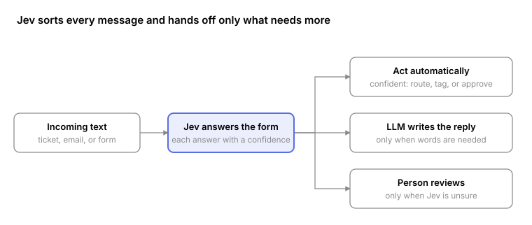

No. 07 · Field guides
The cheap, fast way to make a million decisions
When I was a customer success manager, most of the decisions in my day were small. Which team owns this? Is this the same issue as last week? Is this urgent, or can it wait for Tuesday? None of them took long. There were just a lot of them, and they came back every day.
Most of the AI work inside a company looks like that: small decisions, made over and over. Which team gets this ticket. Is this invoice a duplicate. Is this lead worth a call. And a lot of companies are sending every one of those decisions to the most expensive model they have, then paying for it to write a paragraph explaining an answer that was really a checkbox.
Split deciding from writing
The pattern I keep coming back to in my own builds is to split the work by what each part is good at. In Henry, the model handles language and judgment, and ordinary code does the math. The same split applies one level up: a decision and a piece of writing are different jobs, and they don't need the same tool.
A new kind of model makes that split cheap. TypeSafe's Jev is built only for decisions. It reads a piece of text and answers a set of multiple-choice questions about it, with a confidence for each answer. You write the questions ahead of time. For a support email: Is this urgent? (yes / no) Which team? (billing / tech / sales) Churn risk? (low / medium / high). Jev returns every answer at once, like "urgent: yes, 91%."
It can't write, chat, or explain itself. It's still a trained language model, so it understands messy, casual writing. It just answers in checkboxes instead of sentences.
Where it sits

The classifier sits at the front and makes the quick call on everything that comes in. Confident answers trigger an action right away. A larger model only gets involved when something needs to be written. A person only sees the cases the classifier isn't sure about.
That's the same shape as the first pass I built into Cherry: compress the volume cheaply, and spend expensive attention, human or model, only where judgment changes the outcome.
Why the economics matter
In Your AI agent is a factory, I argued the number that matters is cost per accepted output, not cost per run. High-volume decisions are where that number gets decided, because a task worth automating happens a million times, and nobody ever paid much per instance for a task that happens a million times.
Here's a rough example from TypeSafe's launch numbers: a company sorting 1 million support tickets a month, about 1,000 tokens each, so 1 billion tokens of input.
| Jev | LLMs | |
|---|---|---|
| Price per million input tokens | $0.042 | about $0.20 to $10 |
| Input cost for 1 billion tokens | $42 | about $200 to $10,000 |
| Output and reasoning tokens | Free | Charged on top |
| Time per answer | 70 to 500 milliseconds | Seconds, up to minutes for reasoning models |
It's cheaper and faster because it skips the two most expensive things an LLM does. It doesn't write its answer one piece at a time, and it doesn't think out loud first. It reads the input once and answers every question in a single pass.
These are TypeSafe's own numbers. Their tests put Jev at about 190 times faster and 440 times cheaper than frontier models, and they say real-world results will likely be lower. Treat them as a starting point to test, not a fact.
Where I'd use it
The test I'd apply: is this a decision with a fixed set of answers, made at high volume, where a confidence score tells you when to bring in a person?
| Use case | What it decides | Why it fits |
|---|---|---|
| Support ticket routing | Urgency, team, product area, churn risk | Every ticket gets sorted the second it arrives |
| Agent routing | Which tool or workflow a message needs next | The agent only calls a big model when it has to |
| Account health | Whether notes, emails, or usage point to risk or expansion | The early warning a CSM wishes they had |
| Invoice and expense review | Category, duplicate or not, needs approval or not | Volume work nobody enjoys |
| Data cleanup | Whether records match, are duplicates, or are missing details | Entity resolution at scale |
| Grading AI outputs | Whether another model's answer is accurate, on-brand, or safe | Check every output instead of a sample |
The last one is the one I'm most interested in. Teams running LLMs need to check thousands of outputs, and most can only afford to sample. A cheap enough grader means inspecting every unit, which is the factory argument again. The catch from that essay still applies: checking every unit with a weak gauge mostly scales your confidence, so the grader has to be calibrated against people first.
Where it doesn't fit
- Anything that needs writing. Replies, summaries, and reports still need an LLM.
- High-stakes calls. Its accuracy is mid-tier. On TypeSafe's own benchmark it agrees with two large models about 68% of the time. It's for screening and sorting, with people reviewing the unsure cases.
- Long documents. Input caps at about 32,000 tokens, so a long contract goes in by section.
- Unproven claims. The speed and cost numbers are self-reported, and independent testing is still thin.
How I'd pilot it
The same way I'd hand any workflow to an agent: start with the work. Pick one high-volume decision your team already makes by hand, like ticket routing. Run the classifier on a few hundred past cases and compare its answers with what people decided. Measure selective accuracy: when it says it's confident, how often is it right? If that holds up, set a confidence cutoff. Above it, the classifier acts on its own. Below it, a person reviews.
Jev is available through TypeSafe's API, Vercel AI Gateway, and Cloudflare Workers AI. Open-source versions like open-alternative-jev also exist for teams that want to run it on their own servers.